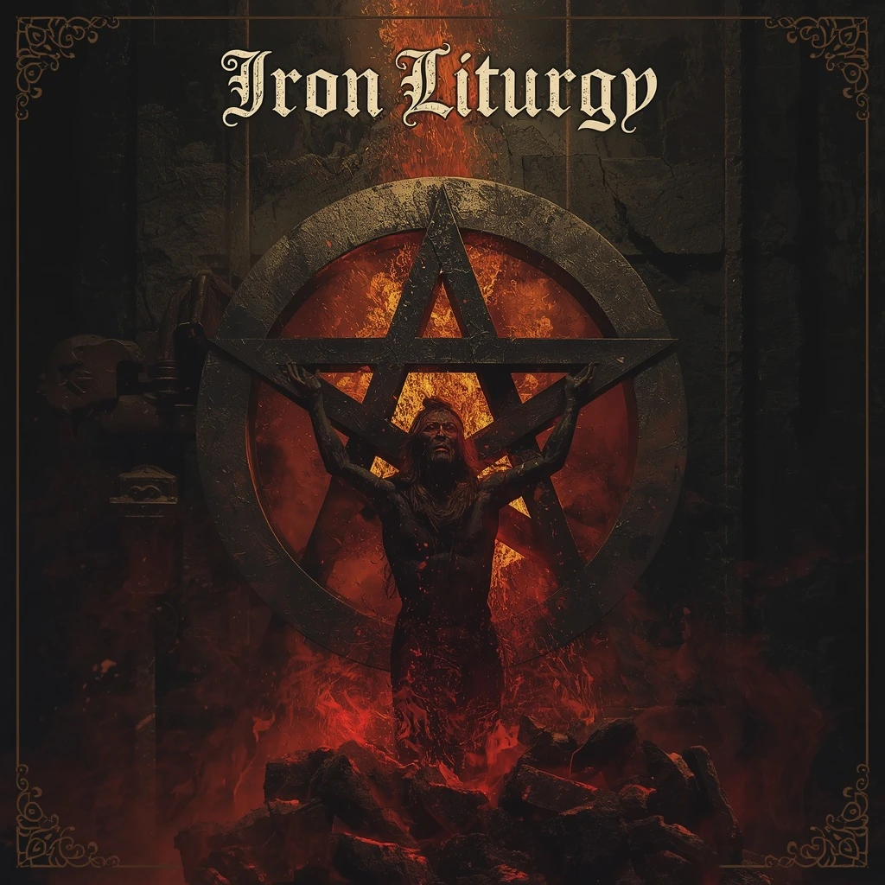
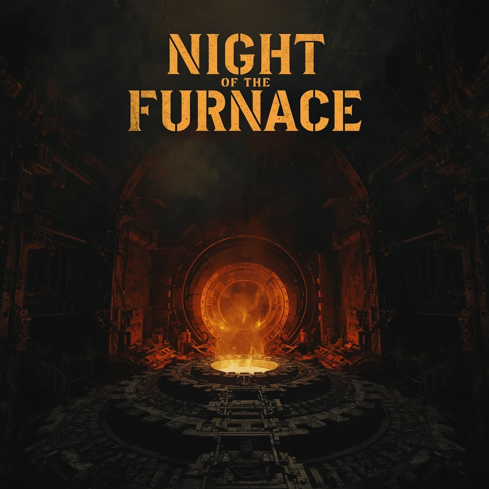
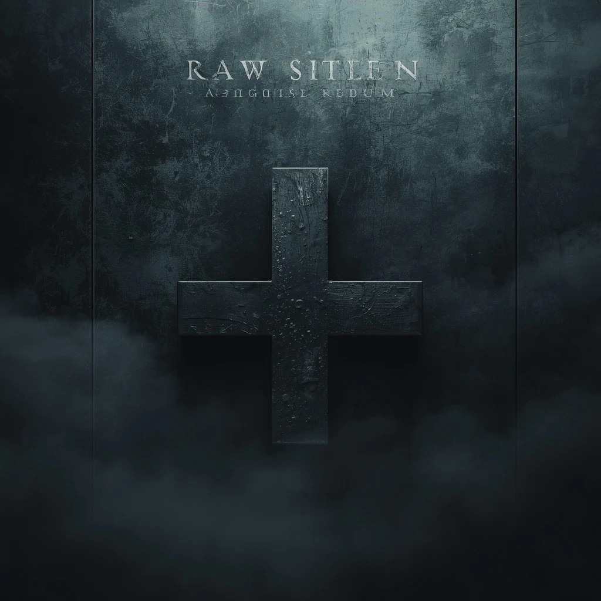

Ashen Thrones
2026 · 10 movements
Official Catalogue
Four full-length rites. Hover a plate to reveal the year and movement count. Open the tracklist for the complete ceremony.
2026 · 10 movements

2023 · 9 movements

2021 · 8 movements

2018 · 8 movements